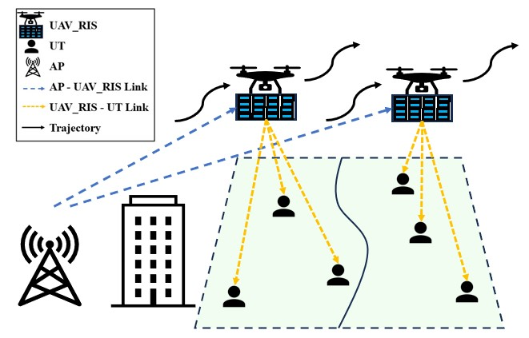
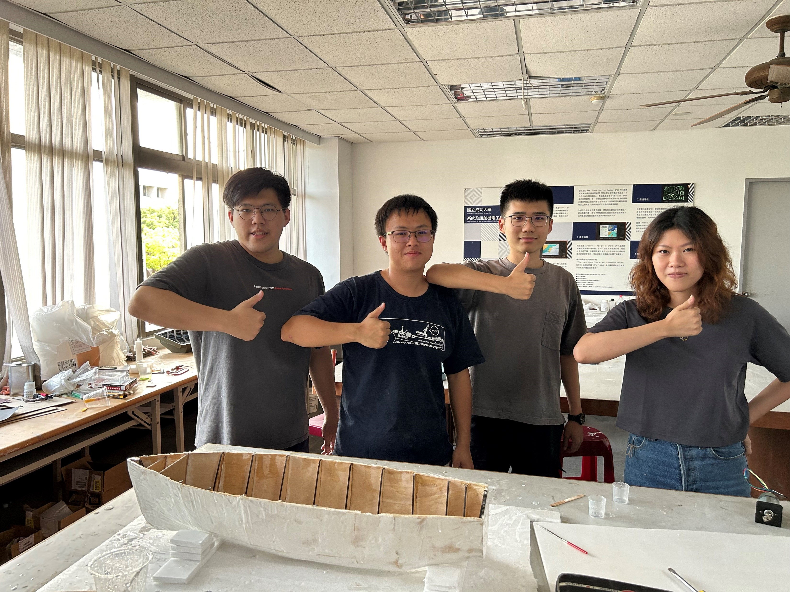
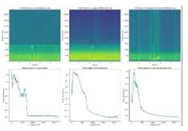
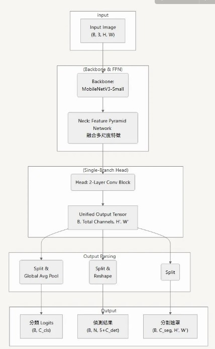
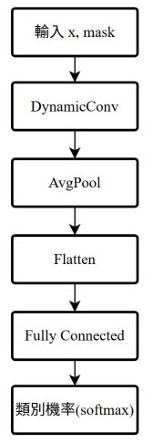
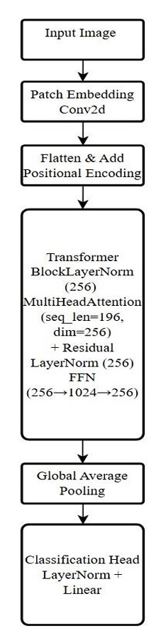
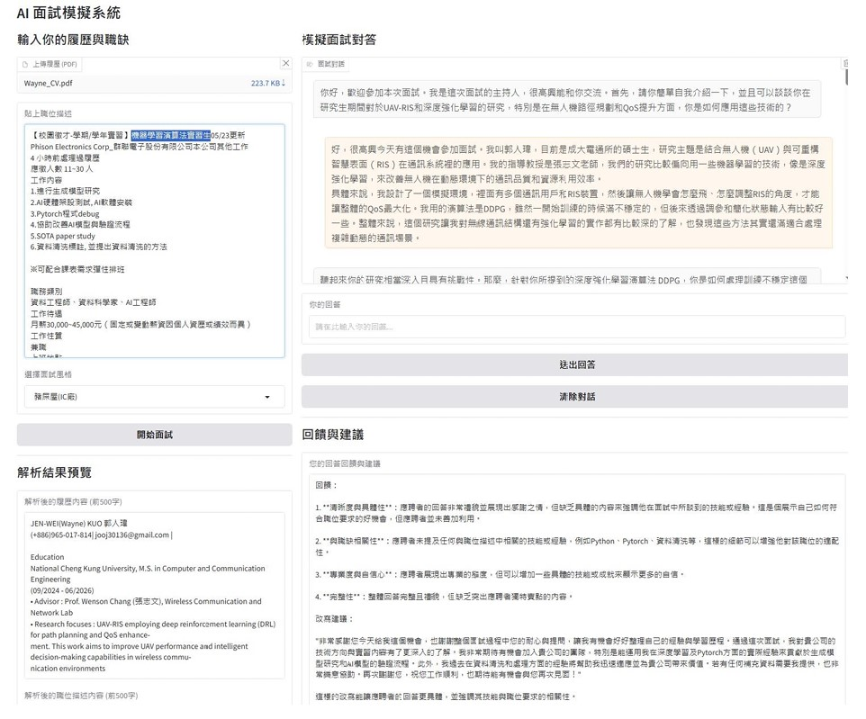
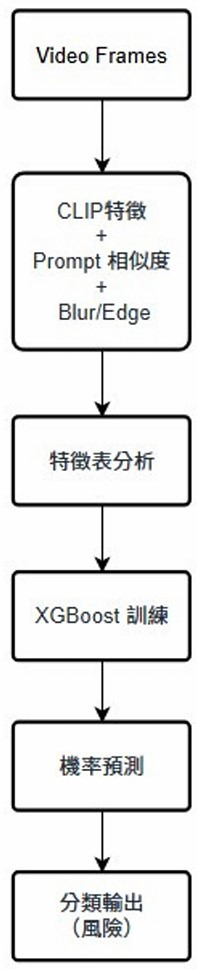
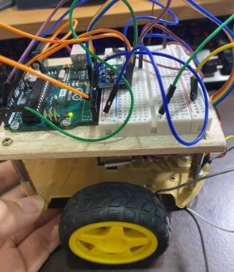

ML + GenAI
PyTorch, ensemble learning, feature engineering, RAG, LLM applications, Stable Diffusion, and ControlNet.
Jen-Wei (Wayne) Kuo · 郭人瑋
Competitions Expert Global Top 1%I build learning models and the systems around them. My work connects AI/ML, computer vision, wireless optimization, and embedded hardware — from competition pipelines to autonomous vessels and Jetson deployment.

Buildings block the direct AP–user path. Two UAVs patrol their own service regions, linking the AP to users through RIS panels. Select a label to explore.
01 / About
I am an M.S. candidate in Computer and Communication Engineering at National Cheng Kung University, and a Kaggle Competitions Expert in the global top 1%. My work connects model design, feature engineering, edge deployment, and hardware integration. I care about the full path from input signal to measurable outcome, whether it is an MRI mask, a Jetson dashboard, a UAV policy, or an embedded control loop.
PyTorch, ensemble learning, feature engineering, RAG, LLM applications, Stable Diffusion, and ControlNet.
Medical segmentation, YOLOv8 pose, CLIP features, lightweight vision models, and clinical gait analysis.
DRL-based optimization, RIS and UAV communication, Raspberry Pi, STM32, Arduino, DSP, and closed-loop control.
Jetson Xavier NX, ONNX Runtime, TensorRT FP16, Docker, FastAPI, Gradio, cameras, and live streaming.
02 / Education
M.S. in Computer and Communication Engineering
Advisor: Prof. Wenson Chang · Intelligent Communication Lab
DRL-based optimization, wireless communication, and energy-aware resource allocation.
B.S. in Systems and Naval Mechatronic Engineering
Capstone advisor: Prof. Chien-Hsing Lee · Lab617
Intelligent unmanned vessel: sound-source recognition and electromechanical integration.
03 / Master's Thesis
Voronoi-based energy-aware user partitioning and DRL resource allocation.
NCKU · Intelligent Communication Lab · 2024–2026
My M.S. research under Prof. Wenson Chang studies how to partition users and allocate resources in dual-UAV RIS-assisted SWIPT networks.
The decision space covers time-switching, power allocation, and RIS phase-shift control, with energy-harvesting efficiency as a central objective.
Energy-aware Voronoi partitioning assigns users to UAV service regions.
DRL learns time-switching, power allocation, and RIS phase decisions under dynamic wireless states.
Study energy-harvesting efficiency, throughput, and service quality across resource-allocation decisions.
04 / Competitions & Awards
Kaggle Competitions
Competition experience in predictive modeling, feature engineering, and ensemble learning.
View my Kaggle profileSilver Medal · top 0.66% · 15 / 2,240.
Gold Award · 2nd place · Team CCE.
Bronze Medal · top 7.7% · 365 / 4,729.
Honorable Mention (佳作) · TEAM_10365.
Top 6.7% · 227 / 3,377.
Top 6.9% · 286 / 4,142.
12th place · traffic accident classification.
Top 7.4% · 47 / 633.
Top 13.9% · 121 / 868.
05 / Publication
Accepted non-proceeding submission to the CVPR 2026 Workshop on Computer Vision for Children (CV4CHL).
Kuo Jen Wei, Yi-Ting Ku. “Clinically-Grounded Multi-View Features and Cross-Track Rule Coupling for Children Gait Visual Analysis.”
Interpretable features + priors for robust small-data gait analysis
06 / Selected Projects
From autonomous hardware and edge deployment to medical vision, efficient models, and generative AI.
Try another keyword or explore all project areas.

Capstone · Mar 2023 – Jan 2024
Led sound-source recognition and electromechanical integration using Raspberry Pi, Arduino, Python, and C++. Combined motor-noise-resistant acoustic navigation, heading control, and YOLOv8 LED recognition in an autonomous vessel.
AIDSP Suite · Mar – Jun 2026
Four Jetson demos: audio-to-lyrics with Gemma, real-time neural style transfer, gait authentication, and ControlNet image generation.

Medical Vision · 2025
Custom Attention U-Net with elastic deformation augmentation for LGG MRI segmentation, including qualitative mask comparison and metric tracking.

Personal Project · 2025
Shared-encoder and single-head architecture for classification, detection, and segmentation, with a replay buffer to reduce catastrophic forgetting.

Personal Project · 2025
MLP-generated dynamic kernels conditioned on each input, supporting RGB, RG, and R channel combinations for flexible lightweight vision.

Personal Project · 2025
ViT-inspired classifier with ablation studies on FFN size and patch resolution, designed for an efficient accuracy-footprint balance.

Academic Project · 2025
Resume-aware interview simulation with GPT-4o, LangChain, vector-DB RAG, and feedback that adapts to company-culture profiles.

Academic Project · 2024
CLIP semantic similarity, prompt similarity, and visual features combined with XGBoost for image-based accident-risk scoring.

Academic Project · 2022-2023
Arduino C++ implementation of an inverted-pendulum vehicle with MATLAB LQR simulation and swarm-algorithm parameter tuning.
CVPR 2026 CV4CHL
Clinical multi-view gait descriptors and MotionBERT-PCA priors for EVGS prediction and cerebral-palsy gait classification in a small-data setting.
AI CUP 2026 · ESG NLP
Four-task ESG promise verification using a five-layer decision cascade: encoder ensemble, LLM blending, hierarchical constraints, and mDeBERTa residual fusion.
07 / Edge AI Lab
Four Jetson demos exploring audio, real-time vision, gait authentication, and controllable image generation.
AIDSP Project 1 · Jetson Xavier NX
Records 20 seconds of audio, creates a log-mel spectrogram, runs ONNX genre and mood analysis, then generates themed lyrics through a local Gemma API. The demo preserves a usable fallback path when a microphone, ONNX model, or LLM service is unavailable.
Capture -> spectrogram -> genre/mood -> lyrics
AIDSP Project 2 · Real-time vision
A USB webcam pipeline that converts a PyTorch reference model to ONNX and TensorRT FP16, then serves style-switched video through a Flask MJPEG dashboard. End-to-end streaming reached 15 FPS on Jetson Xavier NX.
USB video -> FP16 inference -> style stream
AIDSP Project 3 · Privacy-preserving access
A camera-based access-control prototype that detects people, tracks motion, builds gait descriptors, matches an enrolled gallery, and raises tailgating alerts. The runtime uses YOLOv8-pose with 17 keypoints and has an HOG fallback when model files are unavailable.
Detect -> track -> authenticate -> protect access
AIDSP Project 4 · Controllable diffusion
A Gradio demo for Canny edge-to-image and sketch-to-image generation. The interface exposes steps, CFG scale, ControlNet weight, scheduler, seed, optional LoRA, and batch ablation logging, with a Jetson Xavier deployment guide.
Structure + prompt -> controllable diffusion output
How I work
Across my projects, inputs such as audio, video, medical images, and wireless states become learned representations, then systems that can be evaluated, deployed, and improved.
08 / Toolkit
09 / Relevant Coursework
Deep Learning · Machine Learning · Computer Vision & Deep Learning · Generative AI · Data Science · Digital Image Processing · Numerical Analysis
Modern Communication · Wireless Networks · Digital Signal Processing · Adaptive Signal Processing · Stochastic Processes · Digital IC Design
Computer Algorithms · Operating Systems · Computer Organization · Object-Oriented Programming
Automatic Control · Microcomputer Control & Embedded Systems